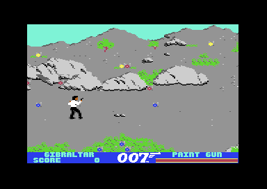
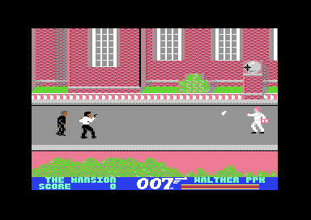

<meta charset="utf-8">
<meta name="viewport" content="width=device-width, initial-scale=1">
<title>The Living Daylights</title>
<link rel="preconnect" href="https://fonts.googleapis.com">
<link rel="stylesheet" href="https://fonts.googleapis.com/css2?family=Lato:wght@400;700;900&family=IBM+Plex+Mono:wght@400;500&display=swap">
<style>
:root{
  --bg:#23262d; --paper:#e9e7e1; --surface:#ffffff; --surface-2:#f1efea; --line:#d5d3cc; --line-soft:#e0ded8;
  --ink:#2f3136; --ink-soft:#55585f; --ink-mute:#80838a;
  --link:#1f5fa8; --link-hover:#154480; --accent:#1f5fa8;
  --amber:#c25a00; --cyan:#1f5fa8; --coral:#d04a3a; --green:#2a8a4a; --violet:#4a5bd6; --hl:#fff0c2;
  --chip:#2f3136; --chip-ink:#ffffff;
  --c64blue:#40318d; --c64grey:#686868;
  --fd:'Lato',system-ui,sans-serif; --fb:'Lato',system-ui,sans-serif; --fm:'IBM Plex Mono',ui-monospace,Menlo,monospace;
  --col:1080px; --gx:68px; --fs:17px; --lh:1.6; --hw:900; --h1:46px; --h2:26px; --sy:48px; --pp:26px; --r:10px;
  --plate-shadow:0 1px 2px rgba(0,0,0,.05),0 4px 14px rgba(0,0,0,.05);
}
*{box-sizing:border-box}
html{background:var(--bg);min-height:100%}
body{background:var(--paper);color:var(--ink);font-family:var(--fb);font-size:var(--fs);line-height:var(--lh);max-width:var(--col);margin:0 auto;min-height:100vh;padding:0 0 4rem}
h1,h2,h3{font-weight:var(--hw);letter-spacing:-.01em;text-wrap:balance;color:var(--ink);margin:0}
.wrap{padding:0 var(--gx)}
.hero{padding:48px var(--gx) 8px;text-align:left}
.eyebrow{font-family:var(--fm);font-size:12px;letter-spacing:.08em;text-transform:uppercase;color:var(--ink-mute);margin:0 0 10px}
.hero h1{font-size:var(--h1);line-height:1.15;letter-spacing:-.02em;margin:0 0 14px}
.hero .sub{margin:0 0 .6em;color:var(--ink-soft)}
section{padding:var(--sy) 0 24px}
section:last-of-type{border-bottom:none}
.fig{font-family:var(--fm);font-size:12px;letter-spacing:.08em;text-transform:uppercase;color:var(--ink-mute);margin:0 0 10px}
h2.t{font-size:var(--h2);margin-bottom:12px}
.lede{color:var(--ink-soft);margin:0 0 30px}
.plate{background:var(--surface);border:1px solid var(--line);border-radius:var(--r);padding:var(--pp);box-shadow:var(--plate-shadow)}
.cap{font-size:14px;color:var(--ink-mute);margin-top:14px;line-height:1.55}
.cap b{color:var(--ink);font-weight:700}
code{font-family:var(--fm);font-size:.82em;background:var(--chip);color:var(--chip-ink);border-radius:4px;padding:2px 6px;overflow-wrap:break-word;-webkit-box-decoration-break:clone;box-decoration-break:clone}

.ft-grid{display:grid;gap:6px}
.ft-grid button{padding:0;position:relative;line-height:0}
.ft-grid canvas{width:100%;image-rendering:pixelated;display:block}
.ft-tag{position:absolute;left:3px;top:3px;font:500 11px/1.3 var(--fm);background:rgba(255,255,255,.88);color:var(--ink);border-radius:3px;padding:1px 4px}
.ft-mark{position:absolute;right:3px;bottom:3px;font:500 10px/1.3 var(--fm);background:var(--chip);color:var(--chip-ink);border-radius:3px;padding:1px 4px}
.ft-big canvas{width:100%;max-width:768px;image-rendering:pixelated;display:block;margin:0 auto}
.ft-table{border-collapse:collapse;font-size:14px;width:100%}
.ft-table td,.ft-table th{border-bottom:1px solid var(--line-soft);padding:5px 8px;text-align:left;vertical-align:top}
.ft-two{display:grid;grid-template-columns:1fr 1fr;gap:16px;align-items:start}
.ft-four{display:grid;grid-template-columns:repeat(3,1fr);gap:12px;margin:0 0 20px}
.ft-four .plate,.ft-two .plate{margin:0;padding:12px}
.ft-shot,.ft-px{width:100%;height:auto;image-rendering:pixelated;display:block}
.ft-wide{max-width:960px;margin:0 auto}
.plate{margin:0 0 22px}
.ft-scroll{overflow-x:auto}
.ft-lab{display:block;font-family:var(--fm);font-size:13px;color:var(--ink-soft);margin:6px 0}
.ft-range{width:100%;max-width:520px;display:block}
.ft-controls{display:grid;grid-template-columns:repeat(3,1fr);gap:14px;margin:12px 0 0}
.ft-read{font-family:var(--fm);font-size:14px;background:var(--surface-2);border-radius:6px;padding:10px 12px;margin:12px 0 0}
.ft-bar-out{height:12px;background:var(--surface-2);border:1px solid var(--line);border-radius:6px;overflow:hidden;margin:10px 0 0;max-width:520px}
.ft-bar-out div{height:100%;background:repeating-linear-gradient(45deg,var(--amber) 0 6px,#e08a3c 6px 12px)}
.ft-meter{position:relative;width:110px;height:18px;background:var(--surface-2);border:1px solid var(--line);border-radius:4px;overflow:hidden}
.ft-meter span{position:absolute;left:0;top:0;bottom:0;background:var(--cyan);opacity:.35}
.ft-meter b{position:relative;font:500 12px/18px var(--fm);padding-left:6px}
.ft-objs{white-space:nowrap}
.ft-obj{display:inline-flex;flex-direction:column;align-items:center;margin:0 3px 0 0;padding:2px;background:#222;border-radius:4px;vertical-align:top}
.ft-obj i{font:500 10px/1.2 var(--fm);color:#fff;font-style:normal}
.ft-swapped{outline:2px dashed var(--amber);outline-offset:-2px}
.ft-swapped i{text-decoration:line-through;text-decoration-color:var(--amber)}
.ft-table canvas{background:#222;border-radius:4px;image-rendering:pixelated}
.ft-dead{display:flex;flex-wrap:wrap;gap:6px;margin:12px 0 0}
.ft-dead button{font-size:12px;padding:4px 8px}
@media (max-width:760px){:root{--gx:16px;--h1:36px;--pp:14px}.ft-two,.ft-four,.ft-controls{grid-template-columns:1fr}}
sup.fn{font-size:.7em;line-height:0}
sup.fn a{text-decoration:none}
sup.fn + sup.fn::before{content:","}
.overview-shot{margin:22px 0}
.overview-shot img{width:100%;max-width:768px;height:auto;aspect-ratio:384/272;image-rendering:pixelated;display:block}
.overview-shot figcaption{font-size:14px;color:var(--ink-mute);margin-top:8px;max-width:768px}
</style>
<!-- tabs -->
<header class="hero">
  <p class="eyebrow">Commodore 64 · 1987 · Domark</p>
  <h1>The Living Daylights</h1>
  <p class="sub">James Bond runs through eight scenes of the 1987 film, from an army exercise on Gibraltar to the arms dealer's house in Tangier, shooting the men who pop up from the scenery around him. On the Commodore 64 every level is one long picture, packed so tightly that all eight fit in memory with the game.</p>
</header>
<main class="wrap">

<section id="story">
  <h2 class="t">Eight scenes from the film</h2>
  <p>The film was Timothy Dalton's first as Bond. A Soviet general, Georgi Koskov, defects to the West, and the trail he leaves takes Bond to Brad Whitaker, an American arms dealer. Domark's game follows the film scene by scene, as <i>Zzap!64</i> put it, "battling his way through eight levels to defeat evil international arms dealer Brad Whittaker".<sup class="fn"><a href="about.html#src-zzap" title="Zzap!64 29">1</a></sup></p>
  <figure class="overview-shot"><figcaption>The loading picture, shown while the disk loads the game. It comes from two files of its own on the disk, and the game loads over it.</figcaption></figure>
  <p>The levels are named after the places in the film: <a href="gameplay.html#gibraltar">Gibraltar</a>, where an exercise with paint guns has a real assassin among the soldiers; the <a href="gameplay.html#concert-hall">Concert Hall</a> in Bratislava, where Koskov's defection begins; <a href="gameplay.html#pipeline">The Pipeline</a> he escapes through; <a href="gameplay.html#mansion">The Mansion</a>, the safe house in England, where a henchman dressed as a milkman throws bottles; <a href="gameplay.html#fairground">The Fairground</a>; <a href="gameplay.html#tangiers">Tangiers</a>, across the rooftops; <a href="gameplay.html#afghanistan">Afghanistan</a>, at a Soviet air base; and, last, <a href="gameplay.html#whittaker">Whittaker's House</a>. The game spells his name with two t's, on the status line and in the review, and the status line spells the first level "GIBRALTER". When Bond gets through the eighth level, the ending says "THE PRIME MINISTER THANKS YOU".</p>
  <div class="ft-two">
    <figure class="overview-shot" style="margin:0"><figcaption>Gibraltar. The status line names the level, the score, and the weapon in hand, with Bond's energy bar beneath it.</figcaption></figure>
    <figure class="overview-shot" style="margin:0"><figcaption>The Mansion. Bond's companion runs behind him, and the milkman stands on the path ahead.</figcaption></figure>
  </div>
  <p>Every level is played the same way. Bond runs from left to right while the scenery scrolls past in <a href="levels.html#layers">three layers at three speeds</a>. Men appear from behind it and shoot, and the player moves <a href="controls.html#crosshair">a crosshair</a> to shoot them first. A hit costs <a href="gameplay.html#energy">energy</a>, and when the energy runs out Bond loses one of his five lives and the level starts again. Bond can <a href="controls.html#jump">jump, roll, or duck</a> past the <a href="gameplay.html#obstacles">obstacles</a> on the ground. Before each of the next six levels he visits <a href="gameplay.html#q-branch">Q branch</a>, where Q offers four gadgets for the level ahead, and on most levels only one of them is the right one.</p>
</section>

<section id="people">
  <h2 class="t">The people behind the game</h2>
  <p>Domark published The Living Daylights in 1987, the year of the film, under licence from Eon Productions and Glidrose Publications. The title screen names the team: the game was written by David Barbour for Sculptured Software Inc, Richard Naylor designed it, and David Whittaker made the music and the effects. Sculptured Software was a studio in Salt Lake City, in the United States.<sup class="fn"><a href="about.html#src-wikipedia" title="Wikipedia">2</a></sup> Domark sold it in Britain; in America the same game came from Melbourne House, on a disk whose files have other names. These pages describe Domark's disk (<a href="about.html#copy">the copy studied</a>).</p>
  <p>David Whittaker's music and sound driver fills 3.2 KB at <a href="music.html">the top of the program</a>: four tunes the game plays, a fifth that it never plays, and 17 sound effects, which the Music tab plays with his own code. The game spells the film's villain the way the composer spells his own name: "DAVID WHITTAKER" on the title, and "WHITTAKERS HOUSE" for level 8.</p>
</section>

<section id="reception">
  <h2 class="t">"Not what you'd expect from an officially licensed James Bond game"</h2>
  <p><i>Zzap!64</i> reviewed the C64 game in issue 29, in September 1987, and gave it 57 per cent. It cost £9.95 on cassette and £12.95 on disk.<sup class="fn"><a href="about.html#src-zzap" title="Zzap!64 29">1</a></sup> The reviewers called it "a dull eight level horizontally scrolling Missile Command variant": "run along, shoot the men, jump over an obstacle and shoot more men." They liked the scenery more than anything else.</p>
  <div class="ft-scroll"><table class="ft-table" style="max-width:640px">
    <thead><tr><th>Rating</th><th>C64</th><th>Zzap!64's verdict</th></tr></thead>
    <tbody>
      <tr><td>Presentation</td><td>67 %</td><td>"Instantly forgettable title screen and no options"</td></tr>
      <tr><td>Graphics</td><td>79 %</td><td>"Eight impressive scrolling backdrops, let down by blocky sprites"</td></tr>
      <tr><td>Sound</td><td>49 %</td><td>"Unremarkable ditty with no relation to the Bond theme"</td></tr>
      <tr><td>Hookability</td><td>68 %</td><td></td></tr>
      <tr><td>Lastability</td><td>43 %</td><td></td></tr>
      <tr><td>Overall</td><td>57 %</td><td>"An uninspired and slightly repetitive Missile Command variant. Not what you'd expect from an officially licensed James Bond game."</td></tr>
    </tbody>
  </table></div>
  <p>One reviewer missed the film's Aston Martin and its stars, and another wrote that "the music sounds exactly the same as any other Dave Whittaker tune". The review also found the game easy to get through: "Bond's Walther PPK has unlimited firepower... he even has five lives!"</p>
</section>

<section id="hidden">
  <h2 class="t">What the reviewers did not see</h2>
  <p>Each level's picture is 160 characters wide, four screens, and the far layer of the scenery goes round it twice, so the near ground passes six times before the level ends (<a href="levels.html#loop">how a level loops</a>). All eight pictures, the title, and Q branch's room are kept <a href="graphics.html#packed">packed with a Huffman code</a> and unpacked when a level starts. Gibraltar ends only when Bond shoots <a href="gameplay.html#gibraltar">the one soldier with live ammunition</a>, and Whittaker takes <a href="gameplay.html#whittaker">27 shots</a>. The game also keeps things nobody was meant to find: <a href="discoveries.html#level-8-pause">a pause before level 8</a> that a wrong comparison skips, <a href="discoveries.html#tune-4">a tune that never plays</a>, and <a href="discoveries.html#source">pieces of its own source code</a> left in the file.</p>
  <p>Domark's first Bond game was <a href="../a-view-to-a-kill/index.html">A View to a Kill</a>, in 1985; Licence To Kill and The Spy Who Loved Me came after this one. <a href="levels.html">Scroll through all eight levels</a>, <a href="graphics.html">see every sprite</a>, or <a href="music.html">listen to the tunes</a>.</p>
</section>

</main>

</main>

<footer style="margin:16px 0 0;padding:22px var(--gx) 0;border-top:1px solid #e0ded8;font-family:'IBM Plex Mono',ui-monospace,Menlo,monospace;font-size:12px;color:#80838a"><a href="https://github.com/gamesexplained/gamesexplained" style="color:#1f5fa8;text-decoration:none">GitHub</a> · <a href="https://discord.gg/3V9GWyRDWV" style="color:#1f5fa8;text-decoration:none">Discord</a><br>© Games Explained contributors. Write-ups, facts and symbol maps are available under <a href="https://creativecommons.org/licenses/by-sa/4.0/" style="color:#1f5fa8;text-decoration:none">CC BY-SA 4.0</a>; code under <a href="https://opensource.org/licenses/MIT" style="color:#1f5fa8;text-decoration:none">MIT</a></footer>
